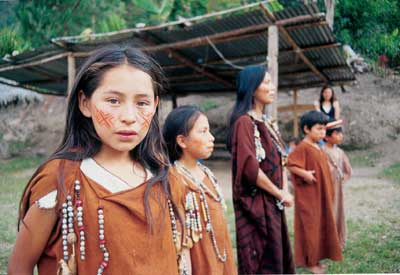
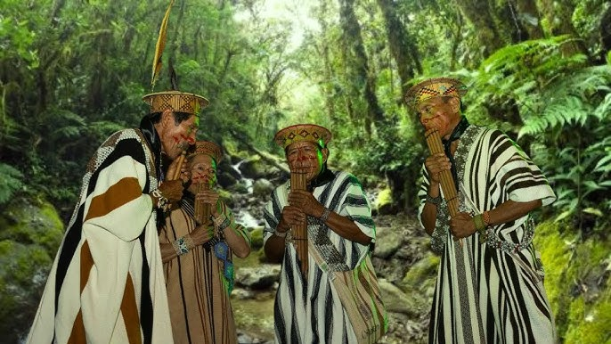

Sobre el Idioma
El idioma Yanesha, también conocido como Amuesha, pertenece a la familia de lenguas Arawak y es hablado principalmente en la región central de la Amazonía peruana, sobre todo en la selva alta de Pasco y en algunas comunidades de Junín.
Se estima que actualmente hay alrededor de 7,000 hablantes, aunque la cantidad varía según las fuentes. El idioma es un elemento central de la identidad cultural Yanesha, ya que a través de él se transmiten las historias, los conocimientos ancestrales y las tradiciones de la comunidad.
El Yanesha conserva una rica tradición oral: canciones, relatos míticos y enseñanzas relacionadas con la naturaleza y la vida en comunidad. Sin embargo, debido a la influencia del español y otros factores sociales, el idioma se encuentra en riesgo de pérdida, razón por la cual existen programas y proyectos de revitalización lingüística que buscan que las nuevas generaciones lo aprendan y lo usen con orgullo.
Cultura Yanesha
La cultura Yanesha se caracteriza por sus prácticas comunitarias, su fuerte conexión con la naturaleza y sus tradiciones ancestrales que incluyen danzas, cantos y artesanías.
Los Yanesha mantienen un profundo respeto por sus ancestros, transmitiendo de generación en generación sus conocimientos medicinales, su arte textil y su música tradicional, lo que fortalece su identidad y la importancia de preservar su patrimonio cultural.
¿Quieres poner a prueba tus conocimientos?
Haz clic en el siguiente botón para realizar el test sobre el idioma y la cultura Yanesha.
Ir al Test